| Image | EU - en | JP - ja | EU - de | EU - es | EU - fr | EU - it | EU - nl | EU - ru | US - en | US - es | US - fr |
|---|
| 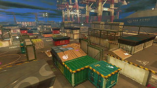 | Port Mackerel | ホッケふ頭 | Heilbutt-Hafen | Puerto Jurel | Docks Haddock | Porto Polpo | Hamerhaaihaven | Порт «Корюшка» | Port Mackerel | Puerto Jurel | Docks Haddock |
| 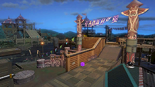 | Camp Triggerfish | モンガラキャンプ場 | Camp Schützenfisch | Campamento Arowana | Hippo-Camping | Campeggio Totan | Kamp Karper | База «Спинорог» | Camp Triggerfish | Campamento Arowana | Hippo-Camping |
| 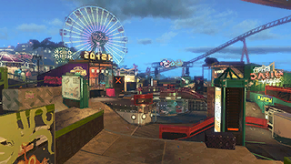 | Wahoo World | スメーシーワールド | Flunder-Funpark | Pirañalandia | Parc Carapince | Soglioland | Waterwonderland | Луна-парк «Язь» | Wahoo World | Pirañalandia | Parc Carapince |
| 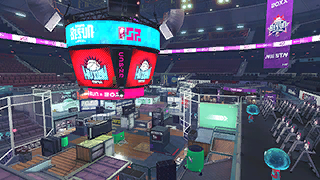 | Goby Arena | アジフライスタジアム | Backfisch-Stadion | Estadio Ajolote | Stade Bernique | Arena Sardina | Planktonstadion | Арена «Лужа» | Goby Arena | Estadio Ajolote | Stade Bernique |
 | Windmill House on the Pearlie | ウィンドミル・キス | Drehtür-Dilemma | Espacio turbulento | Délicieux tournis | Mulini mulinanti | Malle molens | Турникетотрон | Windmill House on the Pearlie | Espacio turbulento | Délicieux tournis |
 | Wayslide Cool | 追憶のスライド | Hin und Her | Cerro deslizante | Tendres réminiscences | Scivolate nostalgiche | Retourvloer | Слайд-шоу | Wayslide Cool | Cerro deslizante | Tendres réminiscences |
 | The Secret of S.P.L.A.T. | 約束の丘で会いましょう | Auf und Ab | Paseo vertical | Invincible vertige | Incontro in collina | Ups en downs | Блок-полигон | The Secret of S.P.L.A.T. | Paseo vertical | Invincible vertige |
 | Goosponge | ハンサムなスポンジ | Schwammschwarm | Cuartel Esponja | Jeu spongieux | Spugne spumeggianti | Sponzensprookje | Губкозал | Goosponge | Cuartel Esponja | Jeu spongieux |
 | Cannon Fire Pearl | ヒメちゃんのキャノン | Kanonen-Rendezvous | Senda cañonera | Détonant tête-à-tête | Tonante testa a testa | Inktkanon-ongein | Жем-батарея | Cannon Fire Pearl | Senda cañonera | Détonant tête-à-tête |
 | Zone of Glass | トランスペアレント・ボーイ | Transparente Gefühle | Cañada transparente | Trouble transparence | Strategie trasparenti | Door en door doorzichtig | Прозрачный ринг | Zone of Glass | Cañada transparente | Trouble transparence |
 | Fancy Spew | バーの一族 | Bürsten-Ballett | Travesía embadurnada | Malicieuses tartineuses | Tribù degli spargitori | Inktsmeerder-idylle | Заливщик-парк | Fancy Spew | Travesía embarrada | Malicieuses tartineuses |
 | Grapplink Girl | イタズラなヒキヨセ | Am Zug | Pista Pescante | Grappins galopins | Calamarampini rampanti | Zweefankeravontuur | Крюколет-арена | Grapplink Girl | Pista Pescante | Grappins galopins |
 | Zappy Longshocking | あしたはデンデン | Rhythmusgefühl | Enclave Giruptor | Tournoyants émois | A ritmo di interruotori | Inktschakelaarinvasie | Осьмишень-отдел | Zappy Longshocking | Enclave Giruptor | Tournoyants émois |
 | The Bunker Games | トジトジ | Eingesperrte Liebe | Tierra aislante | Étreinte mortelle | Accesso limitato | Buitensluitingstijd | Сепараторий | The Bunker Games | Tierra aislante | Étreinte mortelle |
 | A Swiftly Tilting Balance | 天秤ラヴァーズ | Balance des Herzens | Calleja del Equilibrio | Dangereux penchants | Equilibri liquidi | Romantisch evenwicht | Взвес-центр | A Swiftly Tilting Balance | Calleja del Equilibrio | Dangereux penchants |
 | The Switches | ヌリとスイッチの吐息 | Schalterfärberei | Promontorio alternante | Interrupteurs du cœur | Porte di supporto | Schakelaargevaar | Переключарий | The Switches | Promontorio alternante | Interrupteurs du cœur |
 | Sweet Valley Tentacles | たこあし注意報！ | Tentakelwarnung | Territorio tentacular | Tentacules et tentation | Ostacoli tentacoli | Tentakelspektakel | Тенткаль-комплекс | Sweet Valley Tentacles | Territorio tentacular | Tentacules et tentation |
 | The Bouncey Twins | ジャンプマットの詩 | Sprungfeld-Poesie | Región de rebotes | Attirance en altitude | Trama trampolpina | Luchtbedliaison | Матрас-плац | The Bouncey Twins | Región de rebotes | Attirance en altitude |
 | Railway Chillin' | キミのハートにライド・オン！ | Surfschiene ins Herz | País del Raíl | Sur le fil du destin | Sparotaie spassose | Surfrailpassie | Красконвейер-ярд | Railway Chillin' | País del Riel | Sur le fil du destin |
 | Gusher Towns | カンケツセンのばら | Fontänenfest | Camino Surtidor | Impétueux torrents | Geyser effervescenti | Geisergekte | Гейзер-плаза | Gusher Towns | Camino Surtidor | Impétueux torrents |
 | The Maze Dasher | 恋はダッシュ×３ | Verschleuderte Liebe | Cantón acelerado | Convoyeur et convoitise | Romantiche turborampe | Springbandspanning | Треколетомат | The Maze Dasher | Cantón acelerado | Convoyeur et convoitise |
 | Flooders in the Attic | ドーザームーン | Flut der Gefühle | Vía Tintapisonadora | Passion sous pression | Verniciatori lunatici | Dolle Douchers | Роболей-зона | Flooders in the Attic | Vía Entintador | Passion sous pression |
 | The Splat in our Zones | クイックバスケット | Schnellfeuerliebe | Cancha de pintado | Conquêtes en cascade | Canestri splat | Spetterzonesport | Контроль-конструкт | The Splat in our Zones | Cancha de pintado | Conquêtes en cascade |
 | The Ink is Spreading | ヌリヌリトゥナイト | Burschikose Bürsten | Recinto embadurnador | Traîtresses tartineuses | Spargitori sparsi | Inktsmeerderinfiltratie | Заливщик-манеж | The Ink is Spreading | Recinto embarrador | Traîtresses tartineuses |
 | Bridge to Tentaswitchia | ビッグ＝パネルが止まらない | Gegen den Strom | Zona unidireccional | Ode à l'éphémère | Pannello sfuggente | Paneelpower | Панель-сектор | Bridge to Tentaswitchia | Zona unidireccional | Ode à l'éphémère |
 | The Chronicles of Rolonium | 思い出コロガリウム | Rollonium-Rückkehr | Depósito Rolonio | Bouquet de roulonium | Ricordi rullonici | Roloniumromance | Химоролл-корт | The Chronicles of Rolonium | Depósito Rolonio | Bouquet de roulonium |
 | Furler in the Ashes | ピロピロなんかじゃない | Schnalzbandbalz | Ronda serpenteante | Valse des sans-gênes | Srotoloni srotolanti | Inkttoetertoer | Дорожкодром | Furler in the Ashes | Área enrollada | Valse des sans-gênes |
 | MC.Princess Diaries | DEAR SENPAI | Ewige Freundschaft | Área definitiva | Éternelle amitié | Grande amicizia | Eeuwige vriendschap | Жемчик-холл | MC.Princess Diaries | Área definitiva | Éternelle amitié |
| 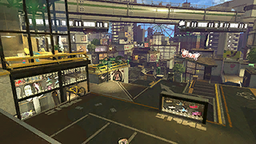 | The Reef | バッテラストリート | Korallenviertel | Barrio Congrio | Allées salées | Rione Storione | Sushistraat | Риф | The Reef | Barrio Congrio | Allées salées |
| 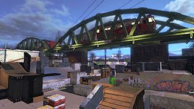 | Snapper Canal | エンガワ河川敷 | Grätenkanal | Canal Cormorán | Canalamar | Canale Cannolicchio | Moeraalkanaal | Подмостовье | Snapper Canal | Canal Cormorán | Canalmar |
| 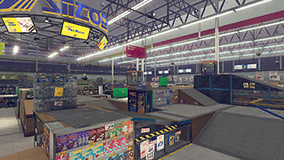 | MakoMart | ザトウマーケット | Cetacea-Markt | Ultramarinos Orca | Supermarché Cétacé | Mercatotano | Bultrugbazaar | «Горбуша-Маркет» | MakoMart | Ultramarinos Orca | Supermarché Cétacé |
| 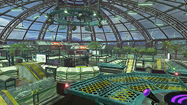 | Kelp Dome | モズク農園 | Tümmlerkuppel | Jardín botánico | Serre Goémon | Serra di alghe | Kelpwierkas | Ферма ламинарии | Kelp Dome | Jardín botánico | Serre Goémon |
| Kelp Dome | モズク農園 | Tümmlerkuppel | Jardín botánico | Serre Goémon | Serra di alghe | Kelpwierkas | Ферма ламинарии | Kelp Dome | Jardín botánico | Serre Goémon |
 | Skipper Pavilion | ムツゴ楼 | Grundel-Pavillon | Puerta del Gobio | Lagune aux gobies | Padiglione Capitone | Palingpaviljoen | Парк «Во Сток!» | Skipper Pavilion | Puerta del Gobio | Lagune aux gobies |
| 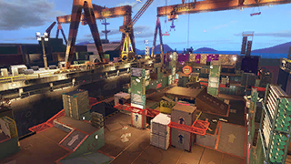 | Sturgeon Shipyard | チョウザメ造船 | Störwerft | Astillero Beluga | Chantier Narval | Cantiere Pinnenere | Walruswerf | Осетровые верфи | Sturgeon Shipyard | Astillero Beluga | Chantier Narval |
| 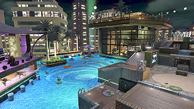 | New Albacore Hotel | ホテルニューオートロ | Hotel Neothun | Gran Hotel Caviar | Hôtel Atoll | Hotel Tellina | Hotel de Keizersvis | Отель «Прибой» | New Albacore Hotel | Gran Hotel Caviar | Hôtel Atoll |
 | Ancho-V Games | アンチョビットゲームズ | Anchobit Games HQ | Estudios Esturión | Tentatec Studio | Acciugames | Ansjobit-gamestudio | «Гуппи-Геймдев» | Ancho-V Games | Estudios Esturión | Tentatec Studio |
| 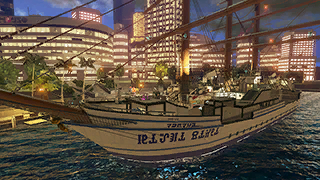 | Manta Maria | マンタマリア号 | Manta Maria | Corbeta Corvina | Manta Maria | Manta Maria | Klipvisklipper | «Манта-Мария» | Manta Maria | Corbeta Corvina | Manta Maria |
| 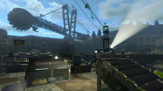 | Piranha Pit | ショッツル鉱山 | Steinköhler-Grube | Cantera Tintorera | Carrière Caviar | Miniera d'Orata | Grondelgroeve | Пираньев карьер | Piranha Pit | Cantera Tintorera | Carrières Caviar |
| 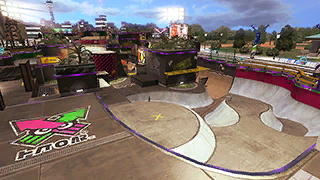 | Blackbelly Skatepark | Ｂバスパーク | Punkasius-Skatepark | Parque Lubina | Skatepark Mako | Pista Polposkate | Snoekduik-skatepark | Скейт-парк «Скат» | Blackbelly Skatepark | Parque Lubina | Plancho Mako |
| 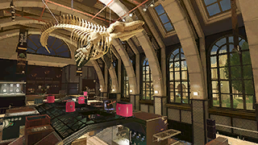 | Shellendorf Institute | デボン海洋博物館 | Abyssal-Museum | Galería Raspa | Galerie des abysses | Museo paleontonnologico | Vistorisch museum | Музей «Мезозой» | Shellendorf Institute | Galería Raspa | Galerie des abysses |
| 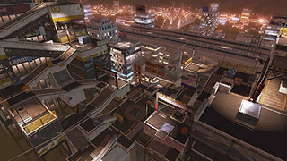 | Moray Towers | タチウオパーキング | Muränentürme | Torres Merluza | Tours Girelle | Torri cittadine | Tonijntorens | Муренские башни | Moray Towers | Torres Merluza | Tours Girelle |
 | Musselforge Fitness | フジツボスポーツクラブ | Molluskelbude | Gimnasio Mejillón | Gymnase Ancrage | Centro polpisportivo | Vinvis Fitness | Спортзал «Кревед!» | Musselforge Fitness | Gimnasio Mejillón | Gymnase Ancrage |
| 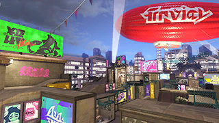 | Arowana Mall | アロワナモール | Arowana-Center | Plazuela del Calamar | Centre Arowana | Centro commerciale | Piranha Plaza | ТЦ «Аравана» | Arowana Mall | Plazuela del Calamar | Centre Arowana |
| 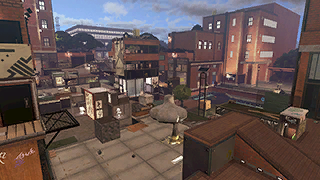 | Inkblot Art Academy | 海女美術大学 | Perlmutt-Akademie | Instituto Coralino | Institut Calam'arts | Campus Hippocampus | Koraalcampus | Академия «Лепота» | Inkblot Art Academy | Instituto Coralino | Institut Calm'arts |
| 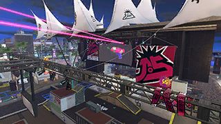 | Starfish Mainstage | ガンガゼ野外音楽堂 | Seeigel-Rockbühne | Auditorio Erizo | Scène Sirène | Palco Plancton | Zeesterrenstage | КЗ «Иглокожий» | Starfish Mainstage | Auditorio Erizo | Scène Sirène |
 | Walleye Warehouse | ハコフグ倉庫 | Kofferfisch-Lager | Almacén Rodaballo | Encrepôt | Magazzino | Zeeleeuwloods | Инкрабсклад | Walleye Warehouse | Almacén Rodaballo | Encrepôt |
| 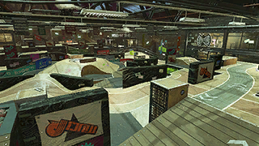 | Humpback Pump Track | コンブトラック | Buckelwal-Piste | Tiburódromo | Piste Méroule | Tintodromo Montecarpa | Lekkerbektrack | Велозал «9-й вал» | Humpback Pump Track | Tiburódromo | Piste Méroule |